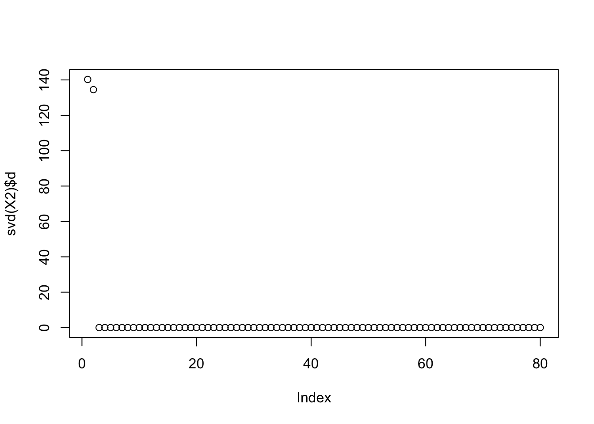
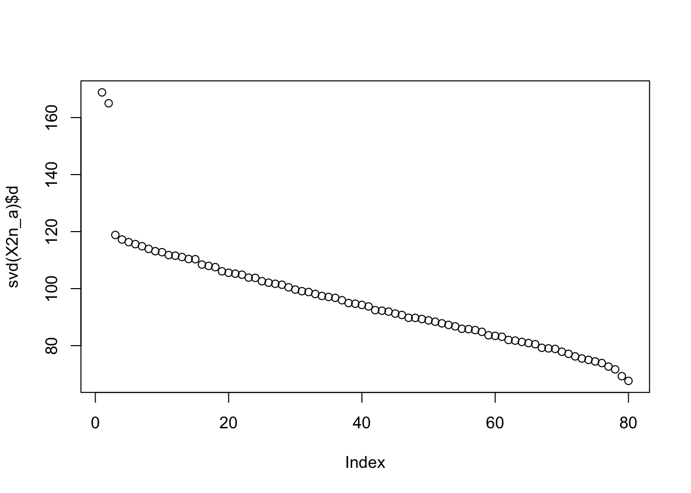
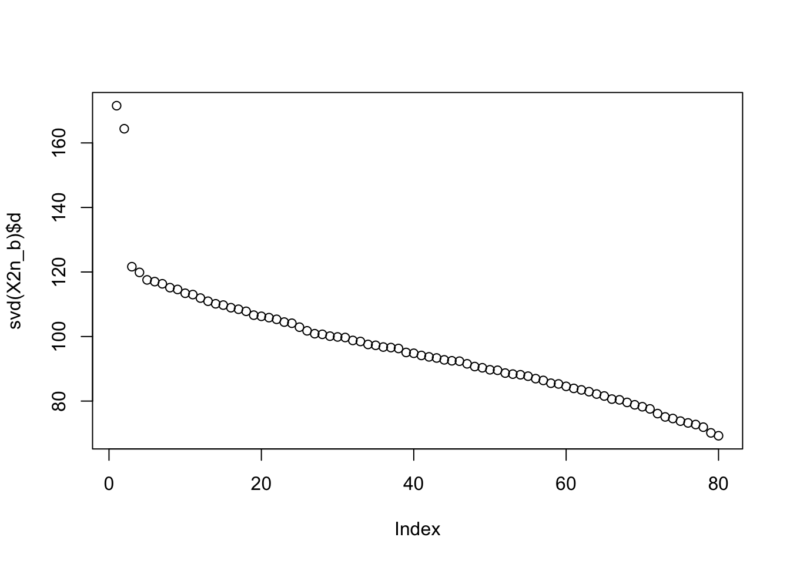
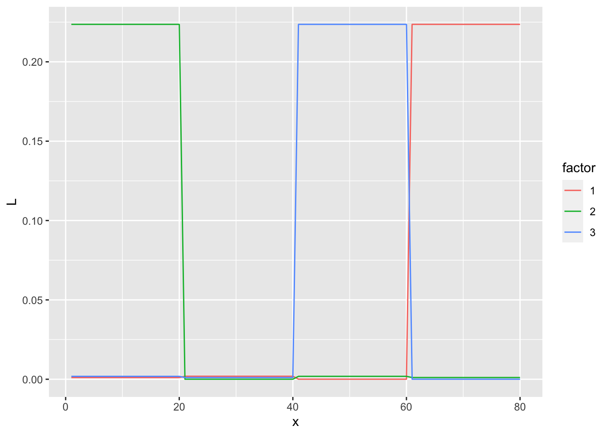
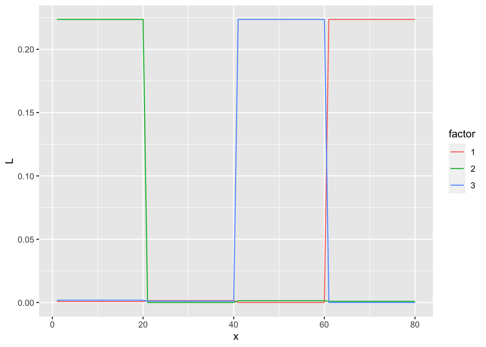
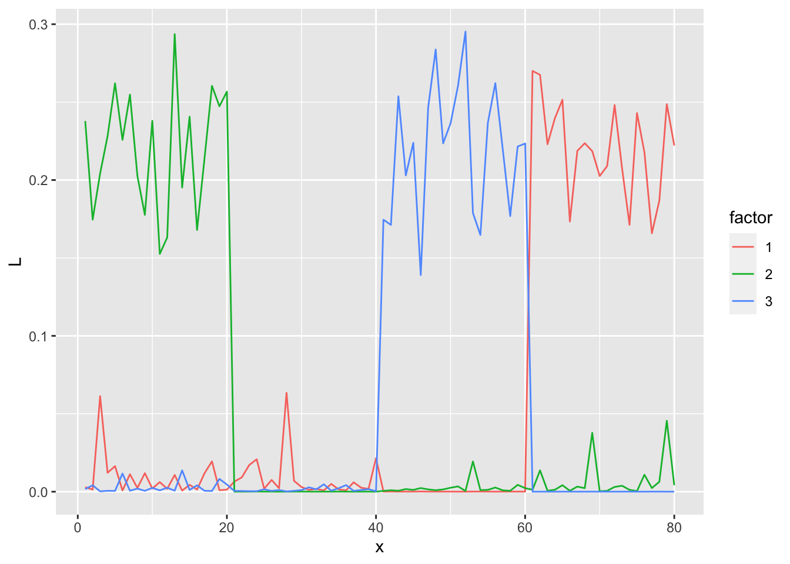
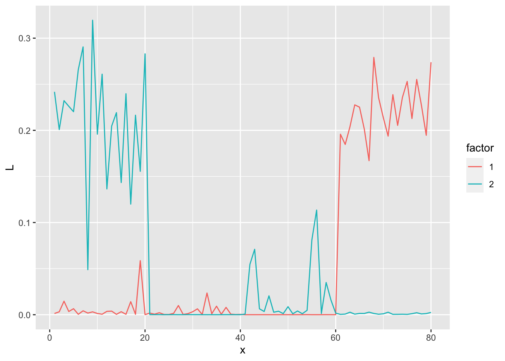
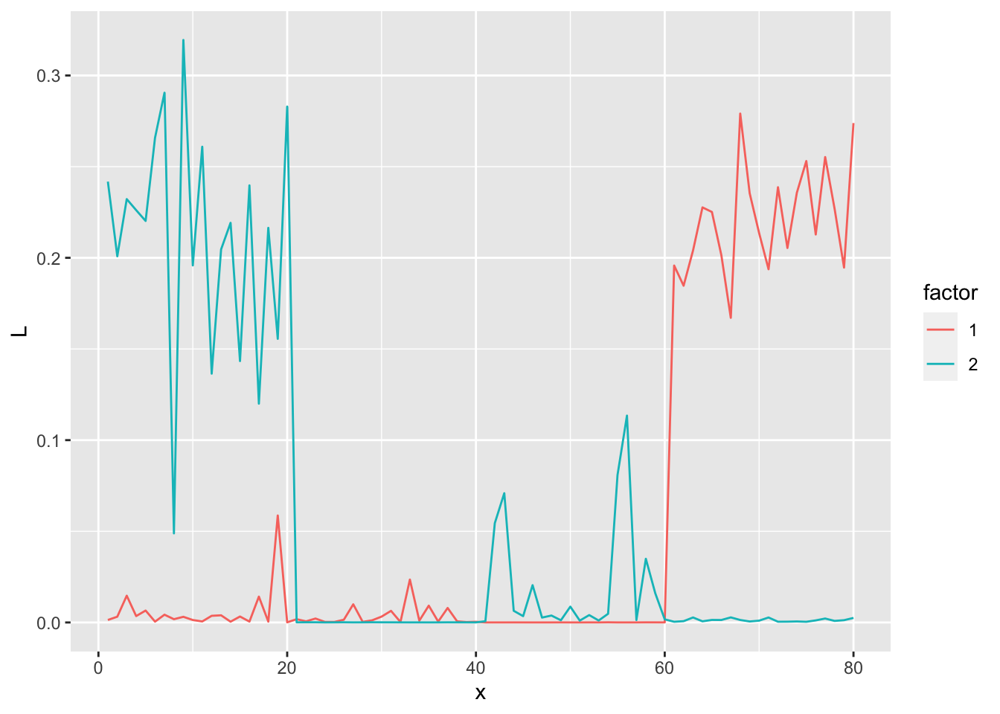

Last updated: 2021-10-16
Checks: 7 0
Knit directory: mf/
This reproducible R Markdown analysis was created with workflowr (version 1.6.2). The Checks tab describes the reproducibility checks that were applied when the results were created. The Past versions tab lists the development history.
Great! Since the R Markdown file has been committed to the Git repository, you know the exact version of the code that produced these results.
Great job! The global environment was empty. Objects defined in the global environment can affect the analysis in your R Markdown file in unknown ways. For reproduciblity it’s best to always run the code in an empty environment.
The command set.seed(20201010) was run prior to running the code in the R Markdown file. Setting a seed ensures that any results that rely on randomness, e.g. subsampling or permutations, are reproducible.
Great job! Recording the operating system, R version, and package versions is critical for reproducibility.
Nice! There were no cached chunks for this analysis, so you can be confident that you successfully produced the results during this run.
Great job! Using relative paths to the files within your workflowr project makes it easier to run your code on other machines.
Great! You are using Git for version control. Tracking code development and connecting the code version to the results is critical for reproducibility.
The results in this page were generated with repository version 4f807be. See the Past versions tab to see a history of the changes made to the R Markdown and HTML files.
Note that you need to be careful to ensure that all relevant files for the analysis have been committed to Git prior to generating the results (you can use wflow_publish or wflow_git_commit). workflowr only checks the R Markdown file, but you know if there are other scripts or data files that it depends on. Below is the status of the Git repository when the results were generated:
Ignored files:
Ignored: .Rhistory
Ignored: .Rproj.user/
Untracked files:
Untracked: altFlash.pdf
Untracked: analysis/alt-flash-nonneg.Rmd
Untracked: analysis/alt-flash-nonneg_largeY.Rmd
Untracked: analysis/alt-flash-normal_largeY.Rmd
Untracked: analysis/altflash_simulation_Yusha.Rmd
Untracked: analysis/bingham.Rmd
Untracked: analysis/bingham_constant.Rmd
Untracked: analysis/demo3_toy.Rmd
Untracked: analysis/demo7_ebfa_hb_g1_K.Rmd
Untracked: analysis/demo7_ebfa_hb_g2_K.Rmd
Untracked: analysis/demo8_splash.Rmd
Untracked: analysis/flashImpute_ML100k.Rmd
Untracked: analysis/flashImpute_ML1M.Rmd
Untracked: analysis/flip_correlation.Rmd
Untracked: analysis/flipping_pdf.Rmd
Untracked: analysis/infinitefactor_toy.Rmd
Untracked: analysis/model_exp_prior_v20201110m.Rmd
Untracked: analysis/model_invgam_prior.Rmd
Untracked: analysis/multiplicative.Rmd
Untracked: analysis/site_libs (joonsukkang@uchicago.edu)/
Untracked: analysis/sliding_correlation.Rmd
Untracked: analysis/sliding_pdf.Rmd
Untracked: analysis/temp.Rmd
Untracked: analysis/toy_p_notfixK.Rmd
Untracked: analysis/y2_NoTargetsByTF.R
Untracked: analysis/y2_eb.Rmd
Untracked: analysis/y2_toy.Rmd
Untracked: analysis/y2_toy_500.Rmd
Untracked: analysis/y2_toy_highd.Rmd
Untracked: analysis/y2_toy_highd_covver.Rmd
Untracked: analysis/y2_toy_lastday_backtosimple.Rmd
Untracked: analysis/y2_toy_master.Rmd
Untracked: analysis/y2_toy_n.Rmd
Untracked: analysis/y2_toy_n_K3.Rmd
Untracked: code/alt-flash.R
Untracked: code/alt-flash_v20210819.R
Untracked: code/model_exp_v20201110.R
Untracked: code/workflowr_codes.R
Untracked: data/eigvals.rds
Untracked: data/hTFtarget_NoTargetsByTF.txt
Untracked: data/metro_results.txt
Untracked: figure/
Untracked: flashImpute.pdf
Untracked: output/.Rapp.history
Untracked: output/Likelihood.gif
Untracked: output/altflash_simulation_Yusha_20211013_res1.rds
Untracked: output/altflash_simulation_Yusha_20211013_res3.rds
Untracked: output/nonneg_v20210824_large_fit.alt.p.rds
Untracked: output/nonneg_v20210824_large_fit.alt.rds
Untracked: output/nonneg_v20210824_large_fit.f.ext.rds
Untracked: output/nonneg_v20210824_large_fit.f.seq.rds
Untracked: output/nonneg_v20210824_large_fit.init.rds
Untracked: output/nonneg_v20210824_small_fit.alt.p.rds
Untracked: output/nonneg_v20210824_small_fit.alt.rds
Untracked: output/nonneg_v20210824_small_fit.f.ext.rds
Untracked: output/nonneg_v20210824_small_fit.f.seq.rds
Untracked: output/nonneg_v20210824_small_fit.init.rds
Untracked: output/tree_toy_altflash_X2_v2021_1012_1309.rds
Untracked: output/tree_toy_altflash_X2n_a_v2021_1012_1309.rds
Untracked: output/tree_toy_altflash_X2n_b_v2021_1012_1309.rds
Untracked: output/tree_toy_altflash_dX2_v2021_1012_1309.rds
Untracked: output/tree_toy_altflash_dX2n_a_v2021_1012_1309.rds
Untracked: output/tree_toy_altflash_dX2n_b_v2021_1012_1309.rds
Untracked: temp-blog/
Untracked: writing/
Unstaged changes:
Deleted: .Rprofile
Deleted: .gitattributes
Modified: .gitignore
Deleted: analysis/Alt-Flash.Rmd
Deleted: analysis/ChoosingW.Rmd
Modified: analysis/alt-flash-normal.Rmd
Deleted: analysis/alt-flash-normal_v20210825.Rmd
Deleted: analysis/concentration.Rmd
Modified: analysis/demo6_ebfa_hb_g1.Rmd
Modified: analysis/demo6_ebfa_hb_g2.Rmd
Modified: analysis/flashier_point_laplace.Rmd
Modified: analysis/model_exp_prior.Rmd
Modified: code/alt-flash_v20211013.R
Modified: code/flashImpute.R
Deleted: output/alt-flash-normal-elbo.pdf
Note that any generated files, e.g. HTML, png, CSS, etc., are not included in this status report because it is ok for generated content to have uncommitted changes.
These are the previous versions of the repository in which changes were made to the R Markdown (analysis/tree_toy_flashier_denoising.Rmd) and HTML (docs/tree_toy_flashier_denoising.html) files. If you’ve configured a remote Git repository (see ?wflow_git_remote), click on the hyperlinks in the table below to view the files as they were in that past version.
| File | Version | Author | Date | Message |
|---|---|---|---|---|
| Rmd | 4f807be | joonsukkang | 2021-10-16 | replace cov(X) with XXt/p |
| html | 983e1f5 | joonsukkang | 2021-10-13 | Build site. |
| Rmd | d59450f | joonsukkang | 2021-10-13 | denoising idea w/ flashier |
library(tidyverse)── Attaching packages ─────────────────────────────────────── tidyverse 1.3.1 ──✓ ggplot2 3.3.5 ✓ purrr 0.3.4
✓ tibble 3.1.4 ✓ dplyr 1.0.7
✓ tidyr 1.1.3 ✓ stringr 1.4.0
✓ readr 2.0.1 ✓ forcats 0.5.1── Conflicts ────────────────────────────────────────── tidyverse_conflicts() ──
x dplyr::filter() masks stats::filter()
x dplyr::lag() masks stats::lag()library(flashier)the goal is to extract the (1,0,0,0), (0,1,0,0), (0,0,1,0), (0,0,0,1) pattern and the method used is flashier on XX^T/p with point exponential prior
here we implement the rank-2 denoising idea, which greatly improves the fit
the toy data have rank-2 plus noise structure, which can be easily detected using a scree plot
we can recover three patterns from X2 and X2n_a, and two from X2n_b; notice that now X2n_b is a harder problem
the denoising idea greatly improves the fit, though flashier is still missing one or two of the patterns.
backfit does not seem to improve fit significantly
# code originally from https://stephens999.github.io/misc/tree_pca_03.html.
#--------------------------------------------------
# create X
set.seed(123)
p = 1000
n = 20
f = list()
for(i in 1:6){
f[[i]] = rnorm(p)
}
X =matrix(0,ncol=4*n, nrow=p)
X[,1:(2*n)] = f[[1]]
X[,(2*n+1):(4*n)] = f[[2]]
X[,1:n] = X[,1:n]+f[[3]]
X[,(n+1):(2*n)] = X[,(n+1):(2*n)]+f[[4]]
X[,(2*n+1):(3*n)] = X[,(2*n+1):(3*n)] + f[[5]]
X[,(3*n+1):(4*n)] = X[,(3*n+1):(4*n)] + f[[6]]
X.svd = svd(X)
# create X2
X2 = X- X.svd$u[,1:2] %*% diag(X.svd$d[1:2]) %*% t(X.svd$v[,1:2])
# adding noise
set.seed(9) # the seed where flash didn't work
X2n_a = X2 + rnorm(4*n*p,sd=3)
set.seed(5) # the seed where flash did work
X2n_b = X2 + rnorm(4*n*p,sd=3)
#--------------------------------------------------
# take transpose
X2 <- t(X2)
X2n_a <- t(X2n_a)
X2n_b <- t(X2n_b)
rm(X, X.svd, f, i, n, p)The toy data have a rank-2 plus noise structure (we know since we made them). And as we can see, the singular values have two large values. We create a rank-2 version of the toy data to check whether denoising before model fitting greatly improves the model fit.
plot(svd(X2)$d)
| Version | Author | Date |
|---|---|---|
| 983e1f5 | joonsukkang | 2021-10-13 |
plot(svd(X2n_a)$d)
| Version | Author | Date |
|---|---|---|
| 983e1f5 | joonsukkang | 2021-10-13 |
plot(svd(X2n_b)$d)
| Version | Author | Date |
|---|---|---|
| 983e1f5 | joonsukkang | 2021-10-13 |
# create a rank-2 denoised version of matrix
r2d <- function(dat.mat){
smat <- svd(dat.mat)
dmat <- smat$u[,1:2] %*% diag(smat$d[1:2], nrow=2) %*% t(smat$v[,1:2])
return(dmat)
}
# create a normalized XX^T matrix
XXtn <- function(X){
X %*% t(X) /ncol(X)
}
# create denoised, normalized XXT matrix
mat2 <- XXtn(r2d(X2))
mat2n_a <- XXtn(r2d(X2n_a))
mat2n_b <- XXtn(r2d(X2n_b))# a function for plotting
plot.three <- function(L.X2, L.X2n_a, L.X2n_b){
data.frame(L=c(c(L.X2), c(L.X2n_a), c(L.X2n_b)),
x=1:80,
factor =rep(as.factor(c(1,2)), each=80),
data = rep(c('X2', 'X2n_a', 'X2n_b'), each=80*2)) %>%
ggplot()+geom_line(aes(x=x, y=L, col=factor))+facet_wrap(~data)
}# add 'point_exponential' to the choice of flashier priors
prior.point.exponential <- function(...) {
args <- as.prior.args(prior.family = "point_exponential",
optmethod = "nlm",
...)
return(do.call(as.prior, args))
}
environment(prior.point.exponential) <- asNamespace('flashier')
plot.factors <- function(fit, showK=NULL){
if(is.null(showK)){showK <- ncol(fit$loadings.pm[[1]])}
data.frame(L=c(fit$loadings.pm[[1]][,1:showK]),
x=rep(1:80),
factor=as.factor(rep(1:showK,
each=80))) %>%
ggplot()+geom_line(aes(x=x, y=L, col=factor))
}X2# wihtout backfit
fit1 <- flash(mat2, verbose.lvl=0,
backfit=FALSE, prior.family = prior.point.exponential())
plot.factors(fit1)
| Version | Author | Date |
|---|---|---|
| 983e1f5 | joonsukkang | 2021-10-13 |
# with backfit
fit1b <- flash(mat2, verbose.lvl=0,
backfit=TRUE, prior.family = prior.point.exponential())
plot.factors(fit1b)
| Version | Author | Date |
|---|---|---|
| 983e1f5 | joonsukkang | 2021-10-13 |
X2n_a# wihtout backfit
fit1 <- flash(mat2n_a, verbose.lvl=0,
backfit=FALSE, prior.family = prior.point.exponential())
plot.factors(fit1)
| Version | Author | Date |
|---|---|---|
| 983e1f5 | joonsukkang | 2021-10-13 |
# with backfit
fit1b <- flash(mat2n_a, verbose.lvl=0,
backfit=TRUE, prior.family = prior.point.exponential())
plot.factors(fit1)
| Version | Author | Date |
|---|---|---|
| 983e1f5 | joonsukkang | 2021-10-13 |
X2n_b# wihtout backfit
fit1 <- flash(mat2n_b, verbose.lvl=0,
backfit=FALSE, prior.family = prior.point.exponential())
plot.factors(fit1)
| Version | Author | Date |
|---|---|---|
| 983e1f5 | joonsukkang | 2021-10-13 |
# with backfit
fit1b <- flash(mat2n_b, verbose.lvl=0,
backfit=TRUE, prior.family = prior.point.exponential())
plot.factors(fit1)
| Version | Author | Date |
|---|---|---|
| 983e1f5 | joonsukkang | 2021-10-13 |
sessionInfo()R version 4.1.1 (2021-08-10)
Platform: aarch64-apple-darwin20 (64-bit)
Running under: macOS Big Sur 11.6
Matrix products: default
LAPACK: /Library/Frameworks/R.framework/Versions/4.1-arm64/Resources/lib/libRlapack.dylib
locale:
[1] en_US.UTF-8/en_US.UTF-8/en_US.UTF-8/C/en_US.UTF-8/en_US.UTF-8
attached base packages:
[1] stats graphics grDevices utils datasets methods base
other attached packages:
[1] flashier_0.2.9 forcats_0.5.1 stringr_1.4.0 dplyr_1.0.7
[5] purrr_0.3.4 readr_2.0.1 tidyr_1.1.3 tibble_3.1.4
[9] ggplot2_3.3.5 tidyverse_1.3.1
loaded via a namespace (and not attached):
[1] httr_1.4.2 jsonlite_1.7.2 splines_4.1.1 modelr_0.1.8
[5] assertthat_0.2.1 horseshoe_0.2.0 highr_0.9 mixsqp_0.3-43
[9] deconvolveR_1.2-1 cellranger_1.1.0 yaml_2.2.1 ebnm_0.1-50
[13] pillar_1.6.2 backports_1.2.1 lattice_0.20-44 glue_1.4.2
[17] digest_0.6.27 promises_1.2.0.1 rvest_1.0.1 colorspace_2.0-2
[21] htmltools_0.5.2 httpuv_1.6.2 Matrix_1.3-4 pkgconfig_2.0.3
[25] invgamma_1.1 broom_0.7.9 haven_2.4.3 scales_1.1.1
[29] whisker_0.4 later_1.3.0 tzdb_0.1.2 git2r_0.28.0
[33] farver_2.1.0 generics_0.1.0 ellipsis_0.3.2 withr_2.4.2
[37] ashr_2.2-47 cli_3.0.1 magrittr_2.0.1 crayon_1.4.1
[41] readxl_1.3.1 evaluate_0.14 fs_1.5.0 fansi_0.5.0
[45] xml2_1.3.2 truncnorm_1.0-8 tools_4.1.1 hms_1.1.0
[49] REBayes_2.2 lifecycle_1.0.0 trust_0.1-8 munsell_0.5.0
[53] reprex_2.0.1 irlba_2.3.3 compiler_4.1.1 rlang_0.4.11
[57] grid_4.1.1 rstudioapi_0.13 labeling_0.4.2 rmarkdown_2.10
[61] gtable_0.3.0 DBI_1.1.1 R6_2.5.1 lubridate_1.7.10
[65] knitr_1.33 fastmap_1.1.0 utf8_1.2.2 workflowr_1.6.2
[69] rprojroot_2.0.2 stringi_1.7.4 parallel_4.1.1 SQUAREM_2021.1
[73] Rcpp_1.0.7 vctrs_0.3.8 dbplyr_2.1.1 tidyselect_1.1.1
[77] xfun_0.25